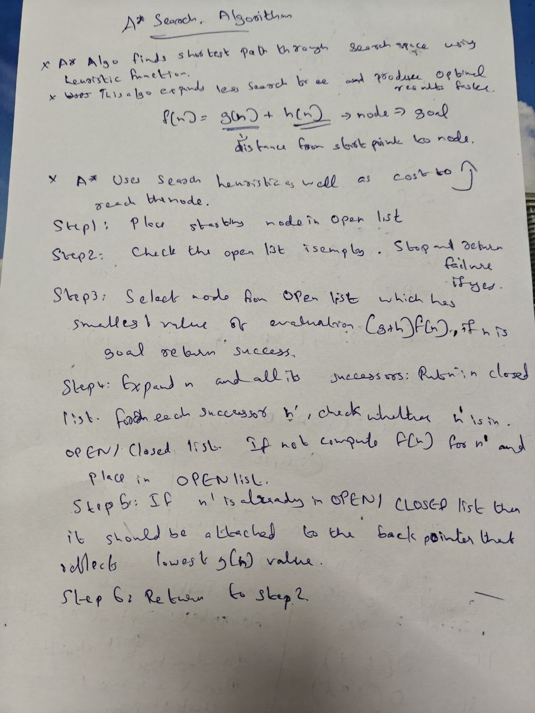
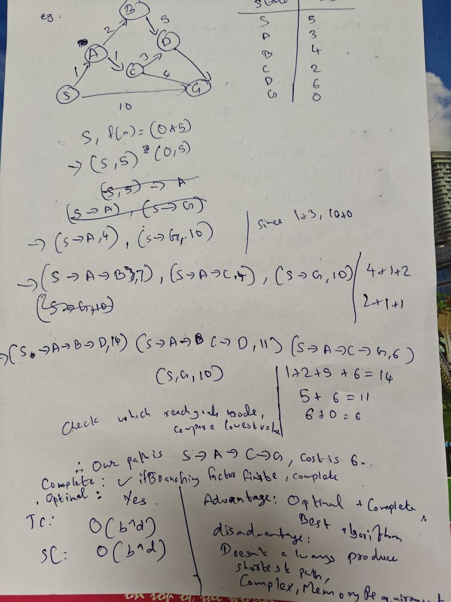
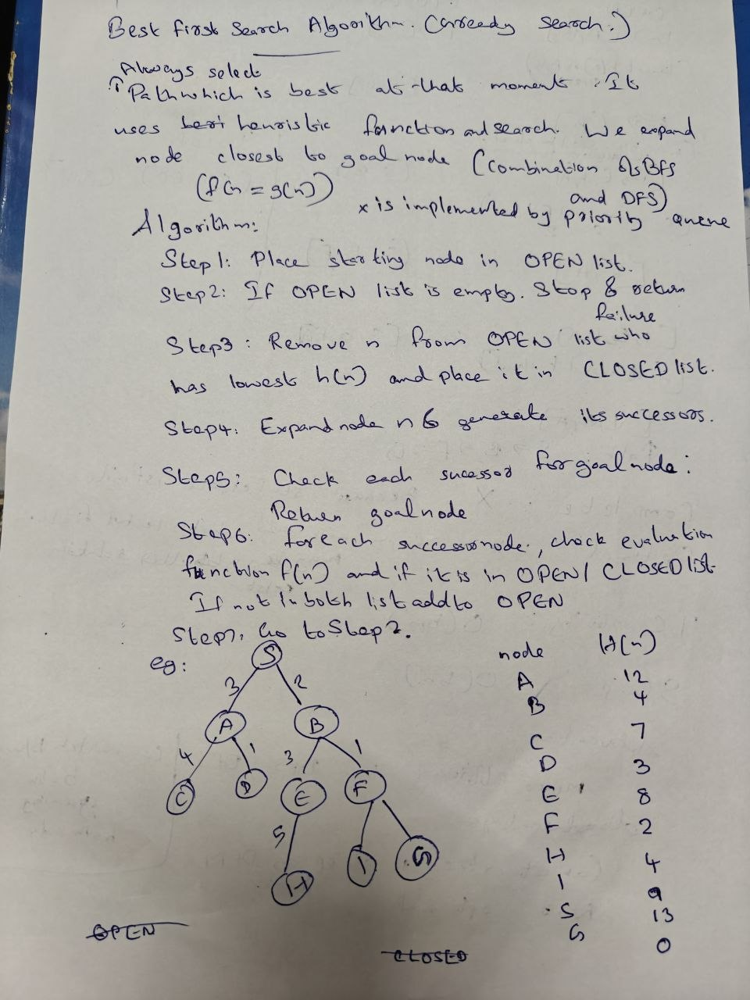
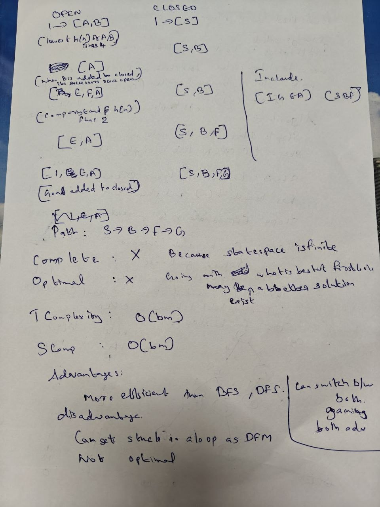

Definition: Evaluating a problem as a state space search involves defining the problem using five formal components. This creates a "state space" (a mathematical graph of all possible situations) that an AI can search through to find a sequence of actions leading to a goal.
Problem Description: The goal is to place 8 queens on a standard 8x8 chessboard so that no two queens attack each other (no two share the same row, column, or diagonal).
Problem Description: The 8-puzzle consists of a 3x3 board with eight numbered tiles and one blank space. A tile adjacent to the blank space can slide into the space. The objective is to reach a specific target configuration.
When an AI agent searches through a state space, there is often more than one way to reach the same state. These are called redundant paths or cycles. How an algorithm handles these paths defines whether it is a Tree Search or a Graph Search.
| Feature | Tree Search | Graph Search |
|---|---|---|
| Memory Structures | Frontier only. | Frontier AND Explored Set. |
| Redundant Paths | Explores them. | Prunes them. |
| Cyclic Environments | Infinite loops possible. | Safe from infinite loops. |
| Space Complexity | Lower memory. | Higher memory. |
| Completeness | Incomplete in cyclic spaces. | Always complete in finite spaces. |
Placeholder: A* Algorithm content to be updated. Refer to diagrams below for the search process.


Placeholder: Best First Search content to be updated. Refer to diagrams below for the search process.


Heuristic (h(n)): The straight-line distance (as the crow flies) from the current city to the destination. This is always admissible because a straight line is the shortest possible distance.